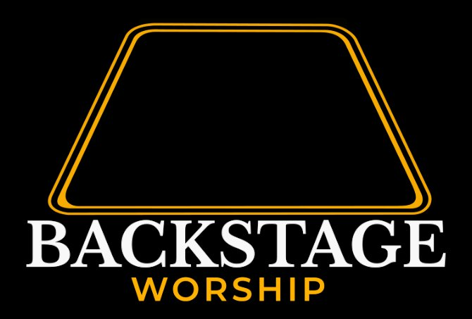

Select the assessment that best matches your role. Your honest responses will contribute to a comprehensive health report for your ministry.
Please provide your details so we can group responses by organization.
Thank you for your honest responses. Your feedback has been securely recorded and will contribute to your organization's comprehensive health report.
The leadership team will receive a detailed analysis once all team members have completed their assessments.